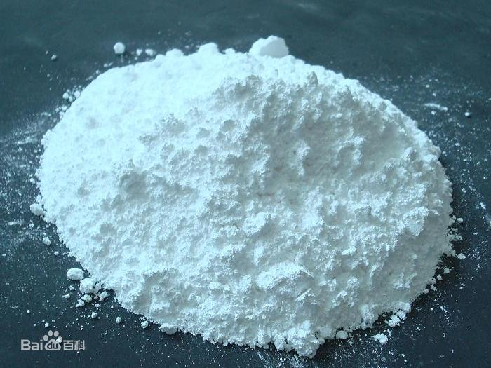

氧化镁(化学式:MgO)是镁的氧化物，一种离子化合物。常温下为一种白色固体。氧化镁以方镁石形式存在于自然界中，是冶镁的原料。
1
性状
2
指标值
总硫量(S)，% ≤0.02
灼烧失重，% ≤10.0
盐酸不溶物，% ≤0.03
重金属(以Pb计)，% ≤0.005
钙(Ca)，% ≤0.05
水溶物，% ≤0.5
氯化物(Cl)，% ≤0.02
硝酸盐(NO3)，% ≤0.005
磷酸盐(PO4)，% ≤0.001
含量(MgO)，% 99.9~100.1
铁(Fe)，% ≤0.005
锌(Zn)，% ≤0.02
钡(Ba)，% ≤0.003
硅酸及氨沉淀物，% ≤0.05
3
分类及用途
应用领域:主要用于菱镁制品的生产。轻烧氧化镁与氯化镁水溶液以一定比例配合，可胶凝硬化成具有一定物理力学性能的硬化体，称之为菱镁水泥。菱镁水泥作为一种新型水泥，具有轻质高强、防火隔热、节能环保等优势，可广泛应用于建材、市政、农业、机械等领域。根据WB/T1019-2002《菱镁制品用轻烧氧化镁》的规定，轻烧氧化镁的化学成分见表1。
表1 轻烧氧化镁化学成分
牌号
QM-85
QM-80
QM-75
级别
优等品(A)
一等品(B)
合格品(C)
MgO ≥
85
80
75
活性MgO ≥
65
60
50
游离CaO ≤
1.5
2.0
灼烧失量
1-9
≤12.0
应用领域:主要用于高级润滑油加工中的清洁剂、抑钒剂、脱硫剂，大大提高润滑膜致密性和流变性，降低灰分。脱铅除汞减少润滑油或燃油废弃物对环境的污染，经表面处理的氧化镁亦可做为炼油工艺中的络合剂、螯合剂、载体，更有利于产品分馏提高产品的质量。尤其在重油燃烧时加入Mg0能消除重油中钒酸对炉膛的损伤。
应用领域:用于食品添加剂、色泽稳定剂、pH值调节剂作为保健品、食品的镁元素的补充剂。用做砂糖精制时的脱色剂冰淇淋粉PH调节剂等。作为抗结块剂和抗酸剂用于小麦粉、奶粉巧克力、可可粉、葡萄粉、糖粉等领域，也可用于制造陶瓷、搪瓷、玻璃、染料等领域。
应用领域:生物制药领域可用医用级氧化镁作为抗酸剂、吸附剂、脱硫剂、脱铅剂、络合助滤剂、PH调节剂医药上用作抗酸剂与轻泻剂，抑制和缓解胃酸过多，治疗胃溃疡和十二指肠溃疡病。中和胃酸作用强且缓慢持久，不产生二氧化碳。
应用领域:硅钢级氧化镁具有良好的导磁性(即具有较大的正磁化率)和优秀的绝缘性能(即电导率能低到10-14us/cm致密态)。可使硅钢片表面形成良好的绝缘层和导磁介质，以抑制和克服变压器中硅钢铁芯的涡流和集肤效应损失(简称铁损)。提高硅钢片的绝缘性能，用作高温退火隔离剂。亦可用作陶瓷材料、电子材料、化工原料及粘结剂、添加剂等在硅钢中应用于脱磷剂、脱硫剂、绝缘涂层生成剂。
应用领域:用于无线高频顺磁导磁材料，磁棒天线，调频元件的磁芯等。代替铁氧体。可用于复合超导磁材料的制作，亦应用于电子磁性行业。作"软磁材料"。也是工业搪瓷和陶瓷的理想原料。
应用领域:高纯氧化镁在高温下具有优良的耐碱性和电绝缘性。热膨胀系数和导热率高具有良好的光透过性。广泛用作高温耐热材料。在陶瓷领域用作透光性陶瓷坩埚、基板等的原料在电气材料、电气领域用于磁性装置填料、绝缘材料填料及各种载体。用作陶瓷基板比氧化铝导热率高2倍多，电解质的损失仅为氧化铝的1/10。亦可作高纯电熔镁砂的原料，在化学上可作为"分析纯"氧化镁。
4
应用领域
氧化镁国内年产量在1200万吨左右。系测定煤中的硫和黄铁矿及钢中的硫和砷。用作白色颜料的标准。轻质氧化镁主要用作制备陶瓷、搪瓷、耐火坩锅和耐火砖的原料。也用作磨光剂粘合剂url]涂料]和纸张的填料，氯丁橡胶和氟橡胶的促进剂和活化剂。与氯化镁等溶液混合后，可制成氧化镁水调。医药上用作抗酸剂和轻泻剂，用于胃酸过多胃和二指肠溃疡病.化学工业中用作催化剂和制造镁盐的原料。也用于放璃、染粕、酚醛塑料等的制造。重质氧化镁碾米工业中用于烧制粉磨和半滚筒。建筑工业用于制造人造化学地板人造大理石防热板隔音板塑料工业用作填充料。还可用于生产其他镁盐。
用于橡胶、塑料、电线、电缆染料、油漆、玻璃、陶瓷、化学试剂、医药、食品添加剂等.
图书馆中用于防止书籍被酸腐蚀;
用于导线的绝缘皮;
用于治疗胃灼热、胃酸和酸性消化不良;
用作短效轻泻剂;
用作镁补充剂;
因其难熔，可用作熔炉衬里;
在比色法中用作白色的参照物;(发射率约为0.9)
压细的氧化镁可用作光学涂料。涂层厚度在300纳米至7毫米之间时，涂层是透明的。1毫米厚的涂层折射率为1.72。
用于攀石用途，可吸手汗，注意:吸入氧化镁烟能导致金属烟雾病。
主要用于配制内服药剂以中和过多的胃酸。常用的制剂有:镁乳--乳状液;镁盖片--每片含MgO0.1g，;制酸散--氧化镁和碳酸氢钠混合制成的散剂等。
氧化镁的含量和活性在一段范围内是成正比 而超出了这段范围 就成反比了!
现在的氧化镁被大部分人误解为就是轻烧粉，其实这种理解是错误的，轻烧粉可以说成是氧化镁的一种，它的别名又叫轻烧镁，轻烧氧化镁,菱苦土，苦土粉(日语的译音)，镁钙粉(因为轻烧粉里面含有氧化钙) 在建材行业轻烧粉中的氧化钙含量越低越好的!
性质:白色轻松粉末，无味，暴露在空气中，容易吸收水份和二氧化碳，该品溶于酸和铵盐，不溶于水和乙醇，熔点2800，沸点3600，氧化镁有高度耐火绝缘性能，熔点很高。
Copyright © 2020 . 格律科技 版权所有 冀ICP备20007883号
人才招聘 联系我们